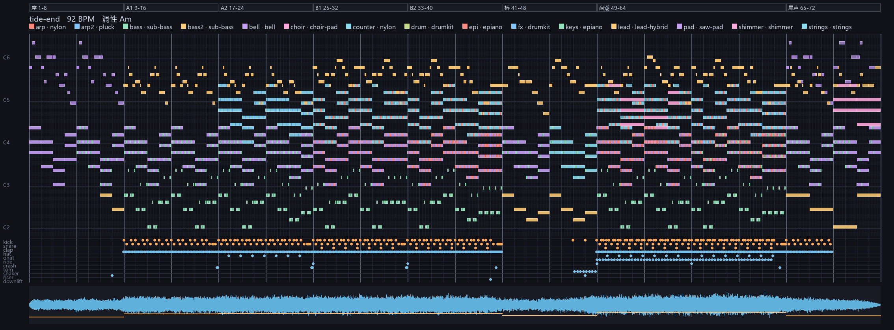

音频与图像均由本项目的文本乐谱渲染生成：python -m tmskit render score/tide-end.tms。
波形、钢琴卷帘与全部音色都是自己合成的，没有使用任何采样或第三方音频库。
想传给别人？用无损压缩版：tide-end.flac（22 MB，
由 python -m tmskit flac 生成，可被任意支持 FLAC 的播放器打开）。
仓库里没有 32 MB 的 WAV，需要时用上面的命令重新生成即可。